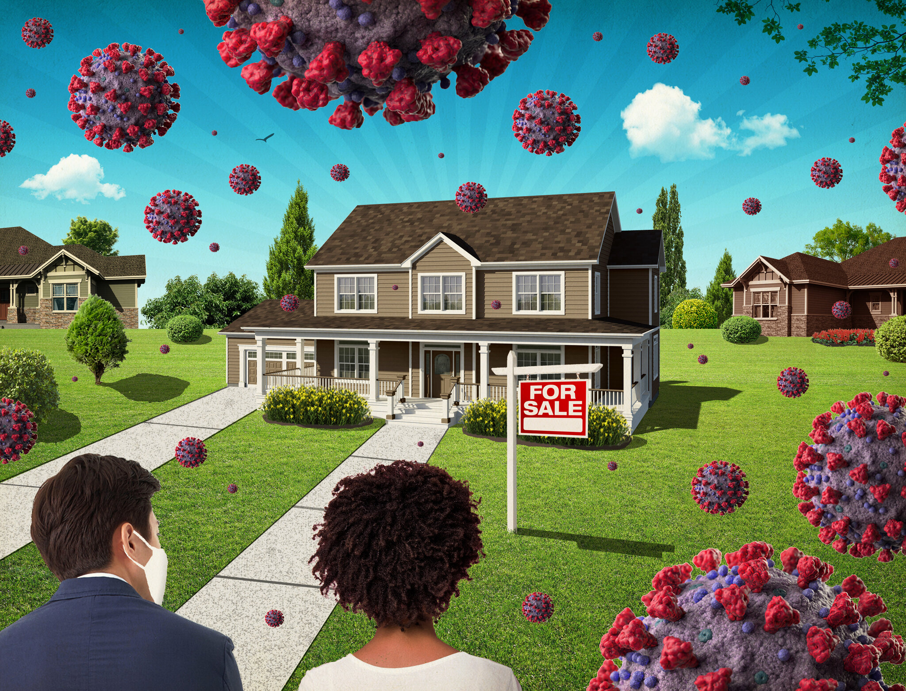

COVID-19 Housing Market Dashboard
Created a Tableau dashboard analyzing U.S. housing inventory changes from 2019-2024
using Zillow data. The project focuses on housing shortages, state-level trends,
and city-level market changes after COVID-19.
Tools: Tableau, Excel, Data Visualization
View Project
Stormwater Data Framework
Built a reusable data framework for analyzing stormwater, flooding, tree canopy,
impervious surface, and precipitation data in the Anacostia Watershed.
Tools: Excel, Python, ArcGIS, Data Cleaning
View Project
R Statistical Modeling & Analysis Project
Used R to analyze global COVID-19 vaccination and death data, comparing trends and outcomes across continents through statistical modeling.
Tools: R, dplyr, ggplot2, Statistical Modeling, Data Cleaning
View Project

SQL Portfolio
SQL projects showing querying, joins, filtering, aggregations, and exploratory
data analysis.
Tools: SQL, MySQL, Data Analysis
View Projects